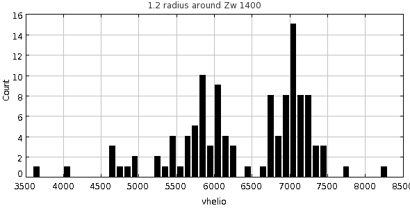
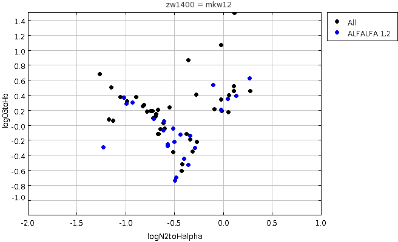

NRGb282 = MKW 12 = Zw1400.4+0949 = NGC 5416
RA,Dec RA,Dec(deg) R(2Mpc) nz nopt cz sig logsig sig logLx dist*
MKW12 NRGb282 1405570+090758 211.4875 9.13278 1.2 41 136 6872 102 2.82 0.04 <42.00 0.00 (102) MKW12
There is substantial substructure in this region that we already know about:
Koranyi and Geller 2002:
Ntot Ncl Nab NEM Mean cz
MKW 12... 101 26 12 14 5868.8 over a radius of 1.16 degrees
They define the cluster center by the centroid of the PSPC image:
MKW 12... NGC 5424 14 02 48.0 09 19 40 PSPC
1402480+091940 210.7000 9.32778
Kinematic Properties R < 0.5 H-1 Mpc:
Mean cz = 5897 km/s
σ = 220 (+46, -30) km/s
Kinematic Properties R < 0.8 H-1 Mpc:
Mean cz = 5890 km/s
σ = 232 (+44, -29) km/s
First, examine the broader velocity region in the box of 2.4 x 2.4

The galaxies above 7000 probably belong to the background filament. However, for the purpose of defining a sample, set velocity limits to be 5000 < vhelio < 8000At this distance 2 Mpc = 1.2 degrees so box should be 2.4 x 2.4 centered on 211.4875,+09.13278 The box then should be 210.28-212.68 and 7.93-10.33 Use agc+nsa.v012.mags+lines.appmags+faceHalpha.csv make a subset with: vhelio > 5000 & vhelio < 8000 RA > 210.28 & RA < 212.68 DEC > 7.93 & Dec < 10.33 ba90 > 0.4 So subset is: vhelio > 5000 & vhelio < 8000 & RA > 210.28 & RA < 212.68 & DEC > 7.93 & Dec < 10.33 Use agc+nsa.v012.mags+lines.appmags+faceHalpha.csv zw1400.agc.nsa.faceHa N = 67 Use a57+agc+nsa.v012.mags+lines.appmags+faceHalpha.csv zw1400.a57.nsa.faceHa N = 22 # AGCnr radeg decdeg vopt M_i BA90 g-i vhelio logN2/HA logO3/Hb v21 W50 sintp sn icode 230939 210.32541 10.11889 6844 -20.01 0.803 0.85 6829 -0.48 -0.70 6864 251 3.53 21.6 1 249092 210.41791 7.9975 5425 -16.88 0.497 0.50 5391 -1.23 -0.30 5464 62 0.71 11.0 1 8938 210.44208 9.49 6259 -21.60 0.711 1.18 6232 -0.02 0.20 6262 345 5.32 27.4 1 8940 210.49666 8.93778 5850 -21.58 0.680 1.23 5909 0.13 0.39 5836 323 0.81 4.6 2 230966 210.53334 9.56694 5661 -18.57 0.628 0.57 5672 -0.57 -0.28 5673 120 0.73 6.8 1 8944 210.54709 9.43972 6230 -21.54 0.771 0.91 6256 -0.49 -0.74 6237 340 4.18 20.0 1 8948 210.63708 9.07917 6016 -20.50 0.469 0.95 6021 -0.34 -0.15 6014 353 7.02 39.6 1 241923 210.68126 9.99139 5811 -17.80 0.813 0.49 5816 -1.02 0.36 5811 86 1.18 12.7 1 241327 210.74583 9.47111 6711 -18.14 0.445 0.53 6680 -0.61 0.04 6688 133 1.15 9.8 1 243860 210.7525 9.04945 5848 -16.54 0.736 0.35 5700 "" 0.68 5676 53 0.72 11.5 1 242169 210.77667 8.24139 5252 -17.43 0.749 0.40 5258 -0.99 0.28 5255 87 0.83 8.7 1 240019 210.80292 8.89528 5449 -20.74 0.603 1.04 5424 0.27 0.62 5415 240 0.7 5.3 2 243862 210.96542 8.70583 5958 -18.01 0.929 0.73 5946 -0.44 -0.13 5953 27 0.41 8.5 1 249105 210.99792 9.27333 5830 -17.02 0.432 0.49 5819 -0.93 0.29 5813 175 1.12 7.6 1 242251 211.09166 9.50806 7290 -19.06 0.851 0.42 7297 -0.71 0.08 7297 134 2.84 21.9 1 240054 211.19458 8.33472 6844 -19.47 0.821 0.61 6853 -0.40 -0.45 6849 121 1.43 12.0 1 240067 211.32417 9.63694 6917 -19.62 0.770 0.84 6937 -0.50 -0.23 6919 204 1.36 7.6 1 9015 211.485 9.02611 7001 -21.24 0.817 1.08 6988 0.04 0.34 6997 305 4.11 28.0 1 242252 211.53958 9.57167 7411 -18.86 0.557 0.63 7412 -0.51 -0.05 7391 138 0.8 5.8 2 9023 211.71292 9.32083 7208 -19.74 0.528 0.58 7203 -0.57 -0.26 7203 231 4.17 27.1 1 240131 212.34125 8.90667 7170 -20.75 0.919 1.09 7035 -0.10 0.53 7045 205 2.26 19.2 1 249114 212.38458 8.67417 7765 -18.77 0.433 0.70 7715 -0.61 -0.08 7773 111 0.68 7.7 1 241408 212.4325 8.06917 7309 -21.25 0.545 1.02 7273 -0.36 -0.53 7255 369 1.3 7.9 1 9054 212.4525 9.85806 7240 -20.30 0.638 1.04 7235 -0.29 -0.31 7228 290 1.63 11.9 1Now construct the BPT diagram of the two subsets:

Choose the subset which has logN2toHalpha < -0.5 : zw1400.agc.nsa.faceHa.SF.csv N = 34, of which 23 are NOT in ALFALFA: zw1400.agc.nsa.faceHa.SF.notalfalfa.txt # AGCnr radeg decdeg NSAID ABSMAG_i g-i vhelio logN2toHalpha logO3toHb 713794 210.48999 9.34833 78678 -17.009136 0.3525310000000026 5817.307268576 -0.8123831919171328 0.26616566676382036 **In Becky's list** 713795 210.58377 9.09139 78672 -17.975702 0.5392569999999992 5980.44418184 -0.7213223018693005 0.1790312210742958 **In Becky's list** 713801 210.74333 9.62667 78682 -16.84265 0.3263379999999998 7052.550139312 -0.8903739200930963 0.36745397977567407 **In Becky's list** 249360 210.75584 9.37972 78564 -16.898182 0.006442999999997312 6721.6025555040005 -1.2623236029961777 0.6722268318526938 **In Becky's list** 715690 210.80374 9.52278 78684 -17.511852 0.5338899999999995 5253.344554016 -0.6673849702834981 0.19726968873679213 **In Becky's list** 713802 210.81332 8.93889 78666 -17.771458 0.6934550000000002 7034.13511592 -0.7407289237226062 0.185124817637975 **In Becky's list** 730105 210.84291 8.9125 78515 -17.051222 0.6585919999999987 6872.890789552 -0.6954711656173705 0.10760002300649804 **In Becky's list** 243897 211.06291 8.76278 78663 -17.561037 0.5874689999999987 5341.865337024 -1.129067305921014 0.05318545711463015 **In Becky's list** 730112 211.12209 9.59722 78583 -17.561659 0.561558999999999 7009.257476384 -0.6866835443302616 0.142029262413811 **In Becky's list** 730115 211.26541 9.60083 78708 -17.509851 0.6484389999999998 7039.890522736 -0.6618218515393743 -0.12523201751536142 **In Becky's list** 713821 211.34874 9.48972 78702 -16.889101 0.7914700000000003 7082.8138419199995 -0.6413149612370547 -0.06018924889910371 **In Becky's list** high inc 249159 211.45 9.53639 78704 -16.90323 0.4118719999999989 7094.878671168 -0.9850189070334784 0.3106168983734128 **In Becky's list** 713832 211.55251 9.45361 78709 -16.940327 0.5081409999999984 6961.437054880001 -0.8211360351061294 0.24409203752153222 **In Becky's list** 713842 211.8 9.67972 78718 -16.912378 0.28922000000000025 7060.80011536 -1.1432508699539055 0.4986905826472775 **In Becky's list** 713854 212.00375 9.33833 78719 -16.523705 0.37508499999999856 7248.20009456 -0.6662471534046064 -0.12013485648767512 **In Becky's list** 249358 210.79501 8.95722 78510 -17.371595 0.7552549999999982 7379.228385248 -0.7190093851990572 0.08151760146125207 249349 211.22958 8.92028 78659 -17.200462 0.7274780000000014 6950.137594608001 -0.781658570824773 0.17335586562002267 730117 211.38 9.69361 78691 -17.342186 0.8500390000000024 6945.735149088 -0.5488558376408879 0.22889639446682378 713868 212.35623 8.14528 78651 -17.450623 1.0091709999999985 7335.491730368 -0.609241519610676 0.023946656282813984 730132 212.43958 9.895 78729 -17.404985 0.31402200000000136 7280.8159652 -1.0497533456890338 0.36978252296209296 These 3 have weak SDSS emission or absorption in online spectra: 230956 210.46957 9.63028 78556 -20.485958 1.2032699999999998 6707.00808136 -1.173864434486896 0.06697629815216798 ** SDSS absorption 231860 210.56126 9.78222 78574 -20.286533 1.1246699999999983 6730.980349056001 -0.6020641661691699 -0.05156899225135928 ** SDSS absorption 730110 211.09084 9.65444 78582 -16.81413 0.5280139999999989 6040.069512928 -0.51506781510453 -0.3668193522535199 **weak SDSS, high inc Cut the last 3 for a total of 20. Becky's list contains 40, 15 of which are in the NSA list. Remove 713821 high inc Of the remaining 25, 4 have ba90<0.4 (AGC 730101, 730093, 730095, 730087). The other 21 are: #AGCnr radeg decdeg NSAID ABSMAG_i g-i vhelio logN2toHalpha logO3toHb 730071 210.00749 9.34305 78547 -17.518656 0.5632459999999995 5700.630620512 -0.7358058964062715 0.08365435568739506 **outside M's box** 230924 210.12917 8.89944 144254 -19.556803 0.4516329999999975 5377.999866368 "" "" **outside M's box** 730086 210.35791 9.9 78575 -16.76486 0.78448 6492.74314 -0.42197 -0.52611 730088 210.39792 9.30889 78559 -23.255007 1.6750930000000004 6016.60958976 "" "" 713792 210.435 10.39528 70864 -16.318222 0.482902499999998 5984.038088335999 -0.9761927763913463 0.40138052747469083 **outside M's box** 231064 210.48459 8.94444 78670 -21.576756 1.234776 5909.868348368 0.1322243500744538 0.3859299481594719 **AGC vopt=0** 230959 210.48625 9.53333 78554 -19.933504 1.1466499999999975 5673.625656944 -0.09109381730346897 0.2047219264766169 730094 210.61958 9.31556 78568 -16.756336 0.9741600000000012 5727.200286096 -0.3567447222170332 0.8583352435281391 730097 210.65376 9.86 78581 -17.01128 0.96747 6845.16273 -0.37869 -0.12438 249350 210.69792 9.32556 78686 -22.16009 1.1900800000000018 5910.790208768 -0.020773383102293177 0.3345138041112583 730100 210.70459 8.67667 78518 -16.55341 0.47586300000000037 5353.644464496 0.0 "" 240010 210.72293 8.89139 78509 -19.121655 0.8812780000000018 5924.521881536 -0.26827526556952236 -0.2261435678419468 240011 210.72917 9.34944 144368 -19.552673 1.1158649999999994 5742.000117760001 "" "" 240015 210.76834 8.9475 78512 -20.857252 1.0712149999999987 6914.9872824 -0.024734327329634022 1.0628394318443697 240016 210.77959 9.36306 78562 -20.642773 1.134442 5998.259021648 -0.3163364785230052 -0.3601352149676153 240025 210.88 9.22083 144389 -20.575874 1.0055709999999998 6038.000048752 "" "" 8971 210.92166 9.57306 78577 -21.55893 1.2770070000000011 6710.9218659200005 0.10951906669819268 0.44674528131834124 240029 210.94708 9.52361 78576 -21.363655 1.2785350000000015 7024.688070415999 0.11155565687902404 0.5124811533317172 713855 212.01749 9.20722 78720 -17.56931 0.9848140000000001 7194.791550176 -0.3403184899841011 -0.19588862901339976 **outside M's box** #20 outside velocity range: 249359 210.47874 9.37889 78557 -17.093245 0.3737250000000003 4516.496589728 -1.069747450739244 0.21128120390444946 ** outside M's vel range** #21 not in NSA Face-on From AGC: AGC radeg decdeg a b vopt 231836 210.60126 9.49944 0.4 0.25 6122 That makes 35 from Becky's list, plus 5 star-forming from NSA = 40
| Cluster/group | References |
|---|---|
| NRGb282 = MKW12 |